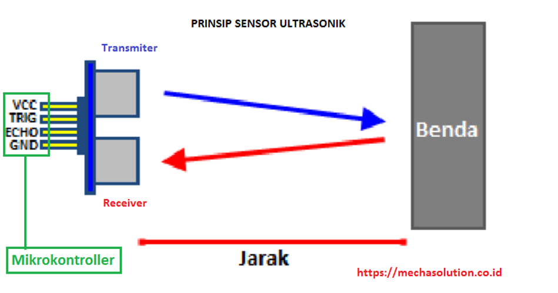
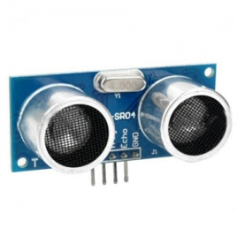
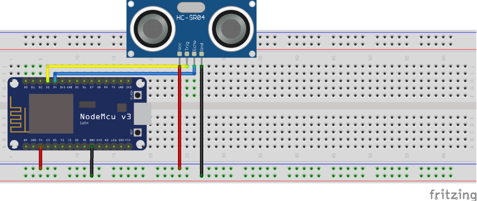
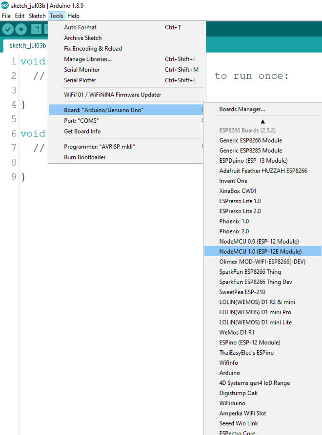
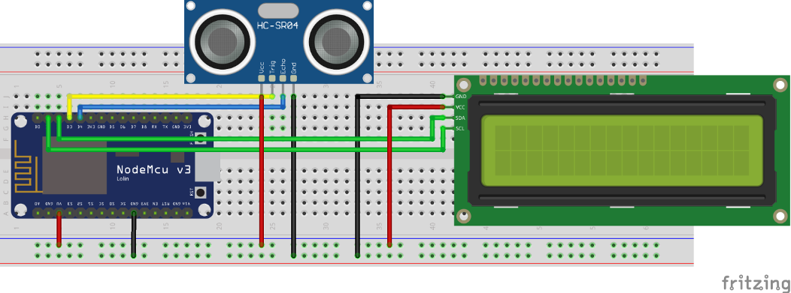

Programming Implementation On NodeMCU Ultrasonic Sensor HC-SR04
Tujuan
- Mampu memahami cara kerja sensor ultrasonic
- Mampu memahami bagaimana cara menghitung jarak antara benda penghalang dan sensor ultrasonic berdasarkan signal gelombang yang dikirim dan diterima
- Mampu membuat program perhitungan jarak antara benda penghalang dan sensor dalam satuan cm dan inch yang ditampilkan ke layar LCD I2C
Capaian
- Menjelaskan proses perhitungan jarak berdasarkan gelombang dikirim dan diterima
- Menampilkan jarak antara benda penghalang dengan ultrasonic ke layar LCD I2C dalam satuan cm dan inch
Teori Singkat
Ultrasonic Sensor HC-SR04
Sensor ultrasonik merupakan sensor yang berfungsi untuk mendeteksi suatu benda dengan jarak tertentu sesuai dengan jenis sensornya. Pada praktikum kali ini dibahas mengenai cara menggunakan serta implemetasi sensor ultrasonik pada NodeMCU. Sensor ultrasonik yang digunakan adalah tipe HC-SR04 dengan jarak yang dapat untuk mendeteksi benda dengan akurasi 3 mm. Sensor ini memiliki pin Trigger, dimana pin ini berfungsi sebagai pengirim sinyal dan pin Echo yang berfungsi sebagai penerima sinyal yang didapat dari pantulan benda.
Sensor ultrasonik ialah sensor yang mempunyai kemampuan untuk mengubah besaran fisis yaitu bunyi kedalam besaran listrik, begitu juga sebaliknya. Sensor ini bekerja berdasarkan perhitungan dari pantulan suatu gelombang ultrasonik sehingga jarak suatu benda dapat diketahui. Nilai gelombang ultrasonik mencapai 20.000 Hz yang tidak bisa didengar oleh telinga manusia karena sangat tinggi dan hanya bisa didengar oleh hewan-hewan tertentu seperti anjing, kucing, atau kelelawar.
Pada sensor ultrasonik tersusun atas rangkaian transmitter sebagai pemancar gelombang ultrasonik dan rangkaian receiver sebagai penerima gelombang ultrasonik. Transmitter sensor akan memancarkan sinyal ultrasonik dan saat sinyal ultrasonik mengenai sebuah penghalang, maka sinyal ultrasonik akan dipantulkan. Sinyal ultrasonik yang dipantulkan akan diterima oleh receiver sensor. Mikrokontroller digunakan untuk mengolah dan menghitung sinyal yang diterima oleh rangkaian receiver sensor sehingga jarak sensor terhadap benda di depannya atau bidang pantul dapat diketahui. Agar lebih jelas perhatikan ilustrasi dibawah ini.

Sinyal ultrasonik yang dipancarkan tersebut akan merambat sebagai sinyal atau gelombang bunyi dengan kecepatan bunyi yang berkisar 340 m/s. Dengan demikian, untuk menentukan jarak benda dengan pantulan dapat ditentukan dengan menggunakan rumus:
S = 340.t/2
dimana,S adalah jarak antara sensor ultrasonik dengan bidang pantul
t adalah selisih waktu antara pemancaran gelombang ultrasonik sampai diterima kembali oleh bagian penerima/receiver sensor ultrasonic
Penggunaan Sensor Ultrasonik meliputi berbagai bidang, seperti :
Dunia Kesehatan:
- Mendeteksi organ-organ dan penyakit dalam tubuh manusia dengan USG
Dunia Industri:
- Mendeteksi suatu objek dalam proses produksi barang
- Mendeteksi keberadaan mineral dan bahan-bahan tambang.
Dunia Robotika:
- Sebagai pengganti indra pada robot untuk mengetahui jarak.
Dunia Maritim:
- Sebagai Radar

Sensor Ultrasonic HC-SR04
NodeMCU Development Board
NodeMCU adalah mikrokontroller yang dibuat berdasarkan chip WiFi ESP8266, jadi NodeMCU adalah seperti arduino biasa yang dapat di flash instruksi tertentu sesuai dengan keinginan kita namun memiliki fitur WiFi, sehingga dapat berinteraksi dengan perangkat client jaringan atau bahkan dengan internet.
NodeMCU juga merupakan development board yang juga menyediakan firmware berbasis eLua untuk chip WiFi ESP8266 dari vendor Espressif. Firmwarenya berbasis Espressif NON-OS SDK dan menggunakan file system berbasis spiffs. Repositori kodenya sendiri berisi 98.1% C-code. Firmware NodeMCU adalah projek pendukung dari development kit NodeMCU yang sangat populer, yang juga menyertakan development board open-source siap pakai yang menggunakan chip ESP8266-12E.
Pemrograman NodeMCU dapat dilakukan dengan mudah sebagaimana menggunakan Arduino. Perbedaan utamanya adalah pada bagian penomeran pin dari boardnya, seperti terlihat pada gambar berikut:

Ada beberapa jenis development board NodeMCU yang umum di jual di pasaran, yaitu jenis Amica dan Lolin. Yang membedakan diantara keduanya hanya pada ukuran dan urutan nomor dari GPIO pin nya.

NodeMCU versi Lolin

NodeMCU versi AMICA
Project 1 Menampilkan pada Serial Monitor
Pada project awal ini akan dilakukan percobaan untuk bagaimana menerapakan atau mengimplementasikan pembacaan sensor ultrasonic untuk kemudian ditampilkan pada serial monitor yang ada pada IDE Arduino, siapkan beberapa komponen yang dibutuhkan dan rangkailah komponen tersebut pada project board.
Hardware Preparation:
- NodeMCU
- Micro USB cable
- PC/laptop
- Software Arduino IDE
- Kabel jumper
- Sensor Ultrasonik HC-SR04
Rangkaian

Sensor Ultrasonik HC-SR04
Pin Triggerdihubungkan ke pinD3NodeMCUPin Echodihubungkan ke pinD4NodeMCUVCCdihubungkan keVUNodeMCUGNDdihubungkan keGNDNodeMCU
Syntax Program
Setelah rangkaian elektrik telah selesai anda rangkai, selanjutnya hal yang perlu anda lakukan adalah menulis syntax program sesuai dengan nomor pin dari rangkaian elektrik tersebut. Berikut ini langkah-langkah dalam menulis serta uploading pada nodeMCU:
Tulis sytax program berikut
#define triggerPin D3 #define echoPin D4 void setup() { Serial.begin (9600); pinMode(triggerPin, OUTPUT); pinMode(echoPin, INPUT); pinMode(BUILTIN_LED, OUTPUT); } void loop() { long duration, jarak; digitalWrite(triggerPin, LOW); delayMicroseconds(2); digitalWrite(triggerPin, HIGH); delayMicroseconds(10); digitalWrite(triggerPin, LOW); duration = pulseIn(echoPin, HIGH); jarak = (duration/2) / 29.1; Serial.print(jarak); Serial.println(" cm"); delay(1000); }Pilih Board NodeMCU dengan klik menu
Tools -> Board -> NodeMCU 1.0 (ESP-12E Module)
Kemudian Pastikan Port telah sesuai dengan perangkat anda
- Upload Sketch program diatas ke board NodeMCU
- Segera setelah proses compile dan upload selesai dan berhasil, buka Serial Monitor dengan baudrate 9600.
- Kemudian coba tempatkan benda di depan sensor ultrasonik, maka akan tampil hasil jaraknya.
Project 2 Menampilkan pada LCD I2C
Pada project kedua ini akan dilakukan percobaan untuk bagaimana menampilkan hasil keluaran dari sensor ultrasonik pada Layar LCD I2C secara real time, siapkan beberapa komponen yang dibutuhkan dan rangkailah komponen tersebut pada project board.
Hardware Preparation:
- NodeMCU
- Micro USB cable
- PC/laptop
- Software Arduino IDE
- Kabel jumper
- Sensor Ultrasonik HC-SR04
- LCD I2C
Rangkaian:
Rangkailah komponen-komponen yang diperlukan seperti pada gambar berikut

- Masukkan library LCD I2C pada Arduino IDE,
Selanjutnya tuliskan kode program berikut pada IDE Arduino
#include <Wire.h> #include <LiquidCrystal_I2C.h> LiquidCrystal_I2C lcd(0x27, 16, 2); //atau 0x3F #define triggerPin D3 #define echoPin D4 void setup() { lcd.begin(); pinMode(triggerPin, OUTPUT); pinMode(echoPin, INPUT); pinMode(BUILTIN_LED, OUTPUT); } void loop() { lcd.clear(); long duration, jarak; digitalWrite(triggerPin, LOW); delayMicroseconds(2); digitalWrite(triggerPin, HIGH); delayMicroseconds(10); digitalWrite(triggerPin, LOW); duration = pulseIn(echoPin, HIGH); jarak = (duration/2) / 29.1; lcd.setCursor(0,0); lcd.print("Jarak : "); lcd.print(jarak); lcd.print(" cm"); delay(1000); }- Upload Sketch program diatas ke board NodeMCU
- Segera setelah proses compile dan upload selesai dan berhasil,
- Kemudian coba tempatkan benda di depan sensor ultrasonik, maka akan tampil hasil jaraknya pada Layar LCD
Tugas
- Kembangkan rangkaian dan kode programnya dimana:
- Terdapat tambahan 3 LED,
- LED1 menyala jika jarak yang terbaca 1 cm
- LED2 menyala jika jarak yang terbaca 2 cm
- LED3 menyala jika jarak yang terbaca 3 cm
- LED menyala semua dan berkedip kedip selama 1 detik jika jarak melebihi dari 3 cm
- Kerjakan projek di atas dengan membuat rancangan rangkaiannya terlebih dahulu ke dalam Fritzing
- Buat kode program seperti contoh di atas sampai berhasil
- Buat laporannya